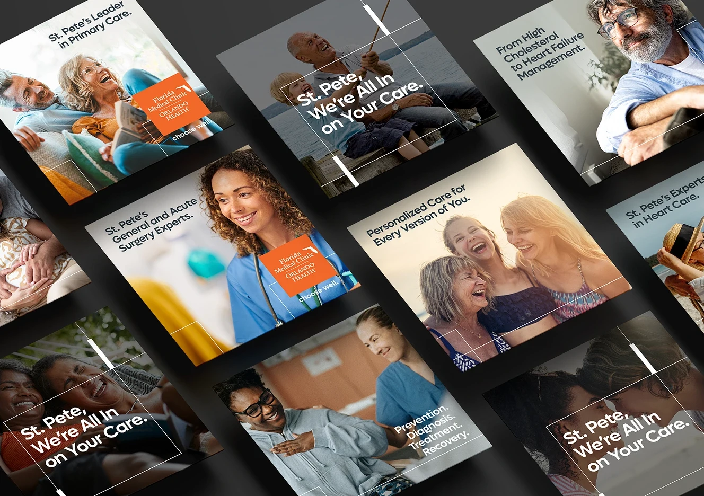
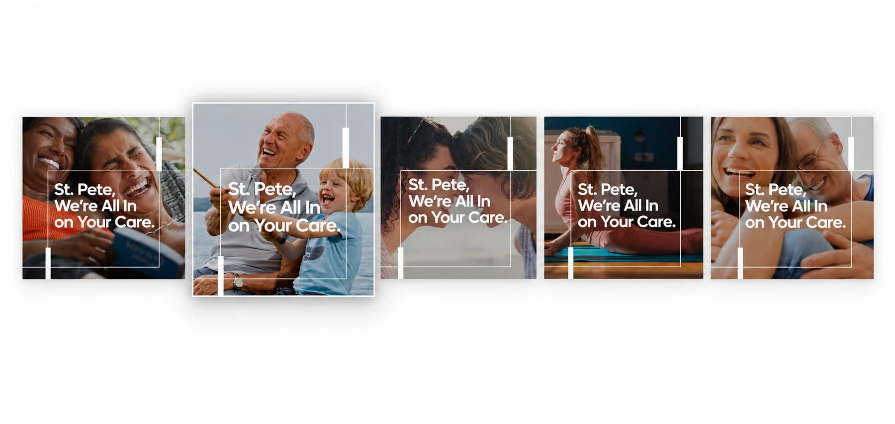
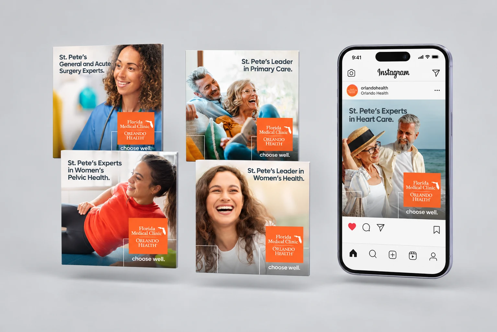
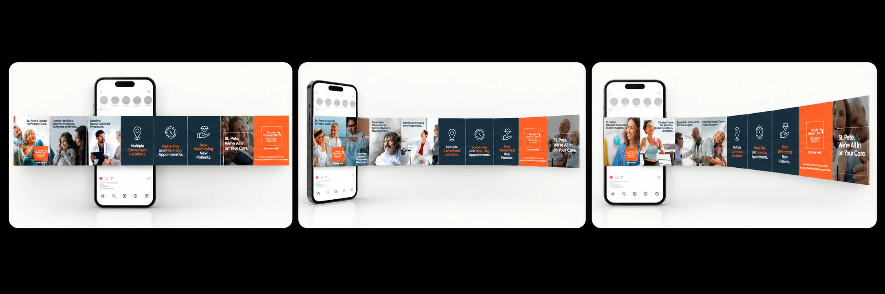
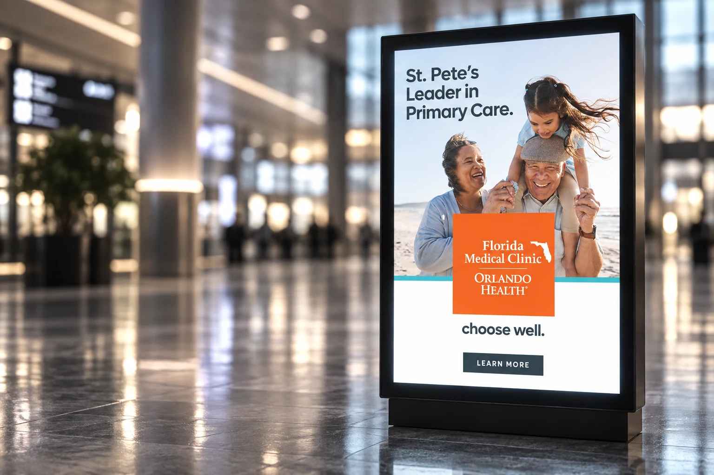

01
Say hello
A conversational introduction built for a community that did not yet know the network.
Reels · Display · Out of home
Florida Medical Clinic Orlando Health saw an opportunity to strengthen its presence in St. Petersburg and become a more familiar healthcare choice for local families.
The Hello St. Pete campaign introduced the organization’s extensive network of providers, specialties and locations through a friendly, community focused message. The campaign was designed to build awareness first, then reinforce trust and encourage appointment scheduling through clear reasons to believe.
Florida Medical Clinic Orlando Health offers more than 20 specialties, over 130 providers and multiple locations across St. Petersburg. The challenge was to communicate this scale without overwhelming the audience or making the campaign feel institutional.
The creative needed to introduce the organization to a diverse community, establish a sense of local relevance and clearly explain the value of connected care. It also had to remain consistent across social media, display advertising, direct mail and landing page applications.

The campaign centered on one message: “St. Pete, We’re All In on Your Care.” A welcoming, conversational entry point for the brand that still carried stronger messages about comprehensive care, medical expertise and convenience.
I developed a flexible visual direction using Orlando Health’s established brand assets, expressive typography, human centered photography and bold areas of color. Local lifestyle imagery and approachable patient moments helped the campaign feel connected to the St. Petersburg community rather than presented as a generic healthcare message.
The modular design language allowed headlines, photography, service information and calls to action to adapt across formats while maintaining a recognizable campaign presence.


In Phase Two I developed a series of social static posts alongside the creative direction behind them, writing the copy as healthcare facts that could stop the scroll for each specialty.
Working within Orlando Health’s highly established visual guidelines required finding intentional opportunities for differentiation without compromising brand consistency. I introduced a distinct, typography led treatment for the FACT series, using scale, contrast and concise statistical messaging to interrupt the repetition of the social grid and capture attention more immediately.
The FMCOH account concentrates many specialties on a single page, so the grid could not feel flooded with the same style. I pushed the palette toward more modern color pairings that still pop on screen and stay inside brand.
The format gave educational content its own recognizable voice while remaining connected to the broader campaign through color, typography and branded elements.
During the creative review, the FACT posts were identified as some of the campaign’s strongest executions because they created differentiation within the grid and made important healthcare information stand out.
Patient testimonials brought a personal perspective to Phase Two, complementing specialty introductions and healthcare facts with lived experiences of care. Where the FACT series captured attention through information, testimonials added emotional connection and reasons to trust the network.
Within the broader visual system, patient stories offered another change of rhythm for the multi-specialty feed. Shared color, typography and core brand elements connected this more personal content to the campaign’s central promise: “St. Pete, We’re All In on Your Care.”
Rather than treating each asset as a separate piece, the campaign was designed as one experience: every channel carried a defined role, a defined message and a defined next step.
A conversational introduction built for a community that did not yet know the network.
Breadth of specialties, providers and locations framed as one trusted network.
Specialty messaging, healthcare facts and patient testimonials by audience segment.
Consistent appointment-driven calls to action across every touchpoint.


The visual system balanced Orlando Health’s recognizable Orange Standard and Grey Standard palette with supporting colors that helped distinguish content while maintaining brand cohesion.
Strong typographic hierarchy made medical information easy to scan. Branded graphic elements framed headlines and photography, creating recognizable campaign cues across every execution.
Communicated breadth and expertise across the network.
Made complex information immediate and relevant.
Added credibility and emotional connection.
Brought warmth and represented a diverse local audience.
Used scale and contrast to make key messages stand out.
Guided users toward learning more or scheduling an appointment.